03 — The wine-dark sea
Twelve ships. Six hundred men. One way home.
The journey is painted around the belly of a jar, the way the Greeks remembered it. Keep scrolling and it turns.
Ithaca — the twentieth year
A beggar stands in the king's hall. The suitors laugh. Penelope sets out the great bow of Odysseus. Prove them wrong.
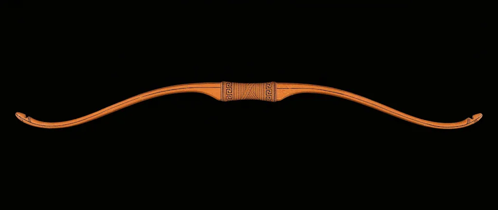
drag the string to the far notch →
Twenty years earlier.
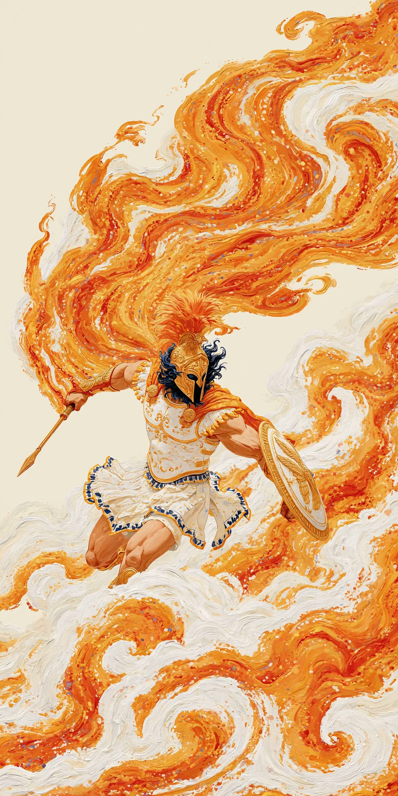
A film by Christopher Nolan · retold in clay and fire
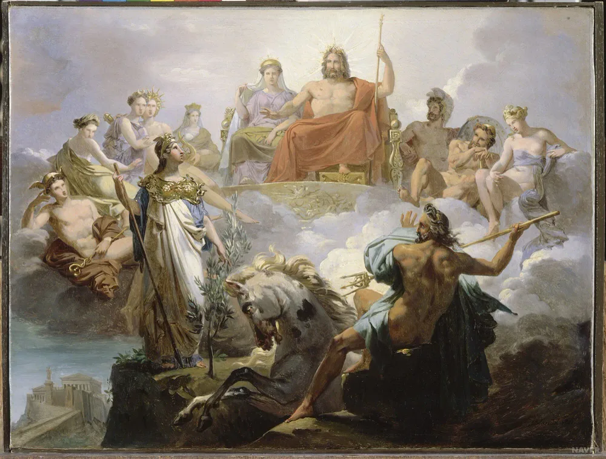
01 — Olympus
three threads · gods, sea, home
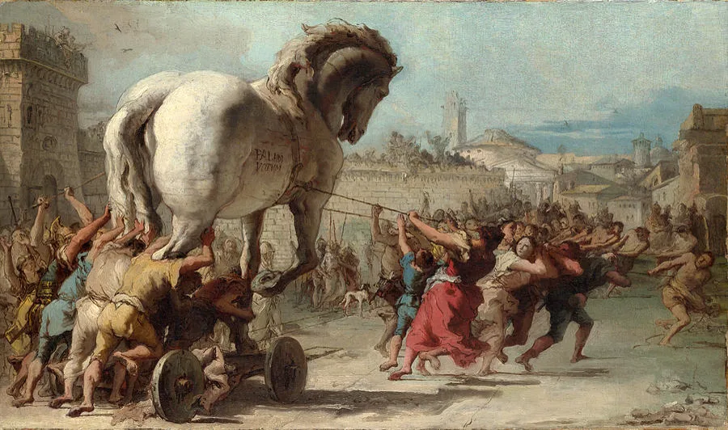
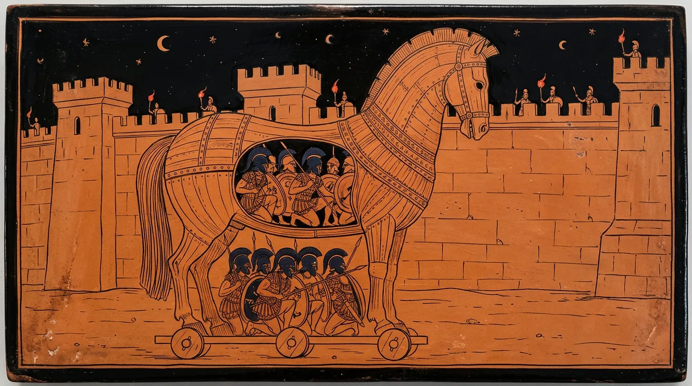
02 — Troy, year ten
03 — The wine-dark sea
The journey is painted around the belly of a jar, the way the Greeks remembered it. Keep scrolling and it turns.
The Cicones
Drunk on victory, his men linger on the beach. The Cicones return at dawn. Seventy-two die before the oars bite the water.
The Lotus-Eaters
Those who taste the lotus forget home, forget wives, forget their own names. Odysseus drags them back weeping and ties them below the benches.
pull the silver knot?
Aeolus, Keeper of Winds
Every hostile wind sealed in ox-hide. Ithaca rises on the horizon. Then, while their king sleeps, the crew open it, looking for gold.
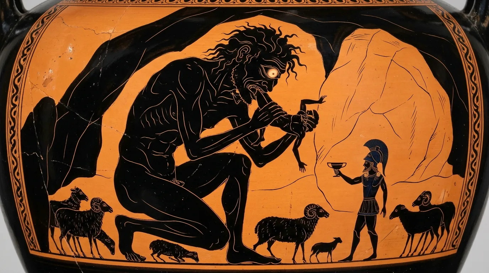
04 — The cave of Polyphemus
My name is Nobody.
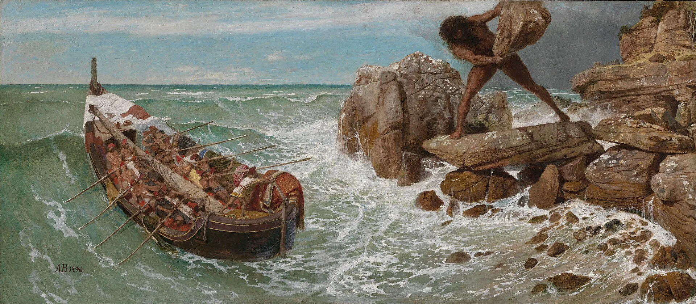
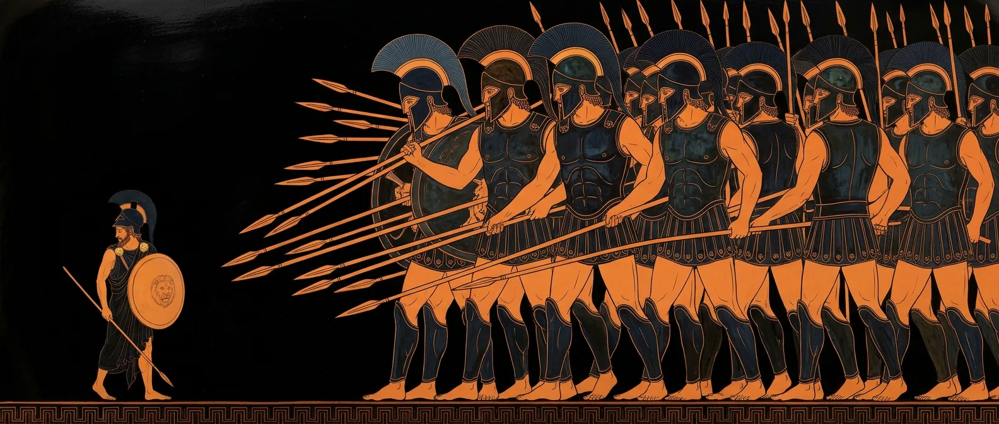
05 — Laestrygonia
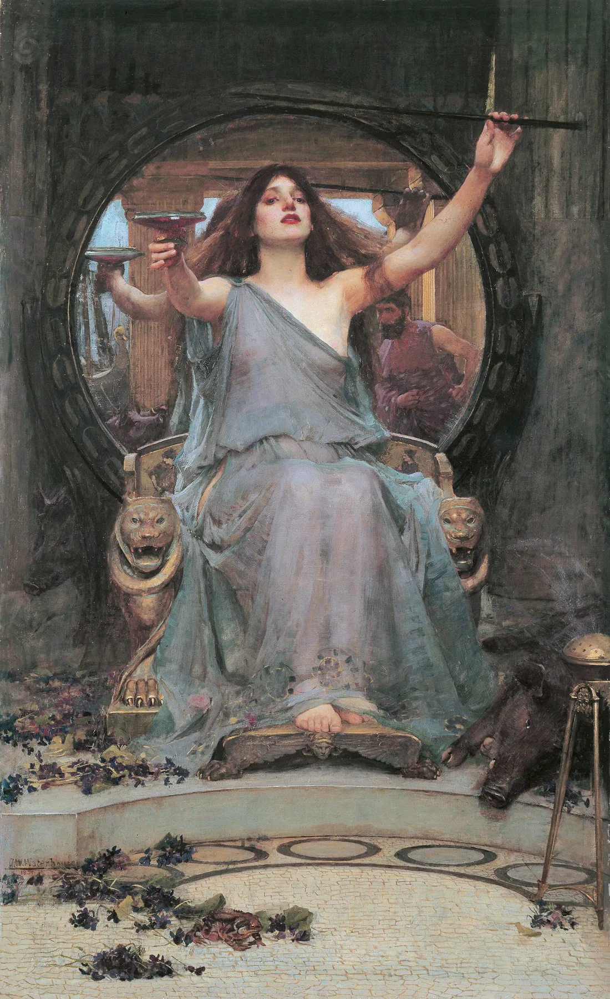
06 — Aeaea
07 — The edge of the world
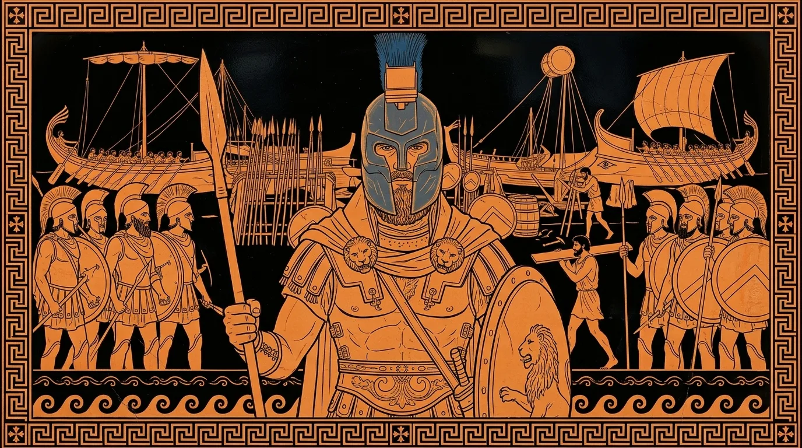
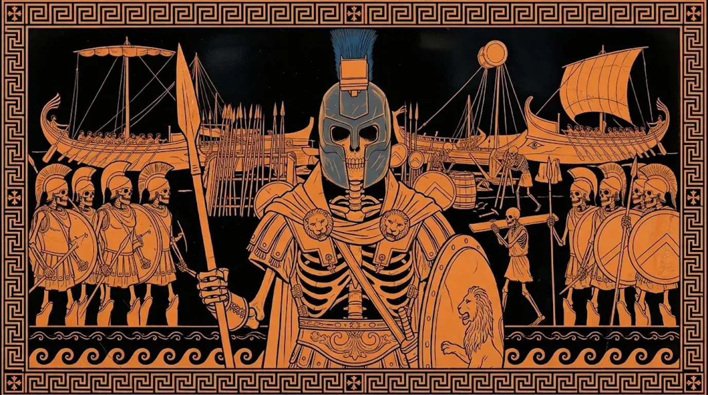
scroll — or click — to see how they came home
He led a thousand ships to Troy and came home a conqueror. His wife Clytemnestra drew him a bath, threw a net over him, and with her lover struck him down. His soldiers died at the feast.
"Never trust the welcome of your own house."
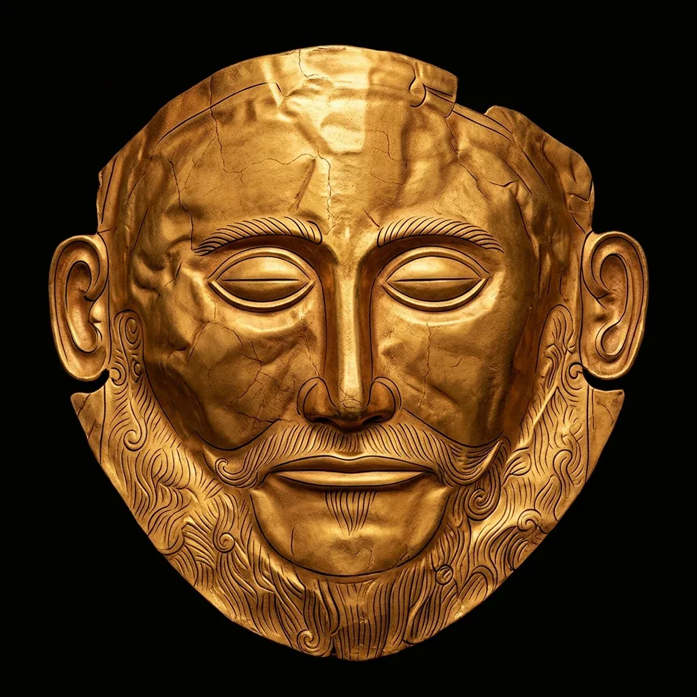
The Mask of Agamemnon · Mycenae, 16th century BC
08 — The singing rocks
Circe's warning: stop their ears with wax. And if you must listen, have them bind you to the mast.
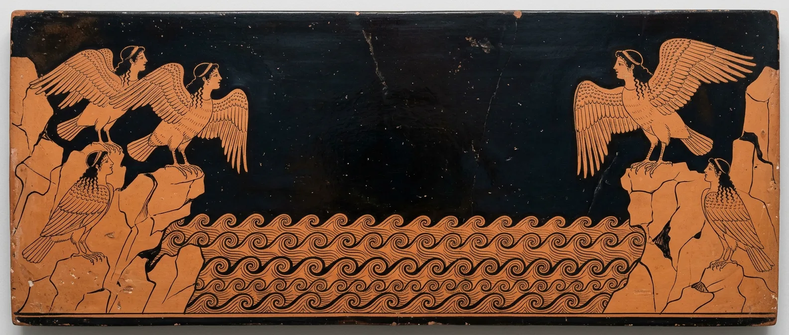
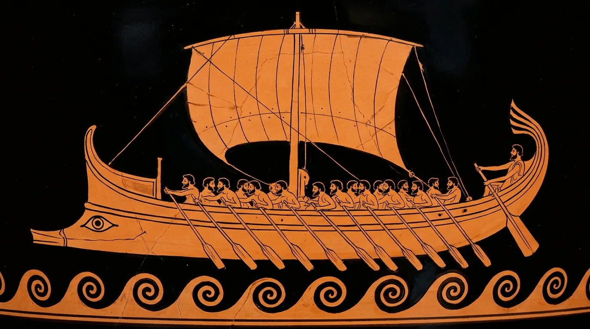
1 · Drag the wax onto each rower 0/6
2 · Now bind your king: wrap the rope around the mast 0/3
3 · Row.
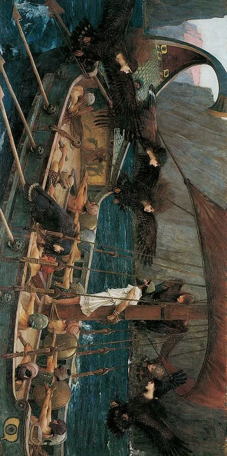
09 — The strait
On the left, Scylla: six heads on six long necks, a sailor for each mouth. On the right, Charybdis, who swallows the sea three times a day.
10 — Thrinacia
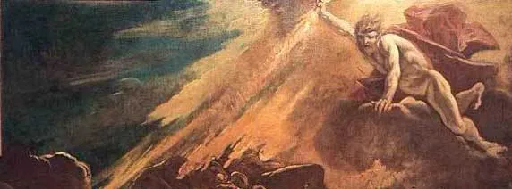
Every man drowned. One clung to the wreckage.
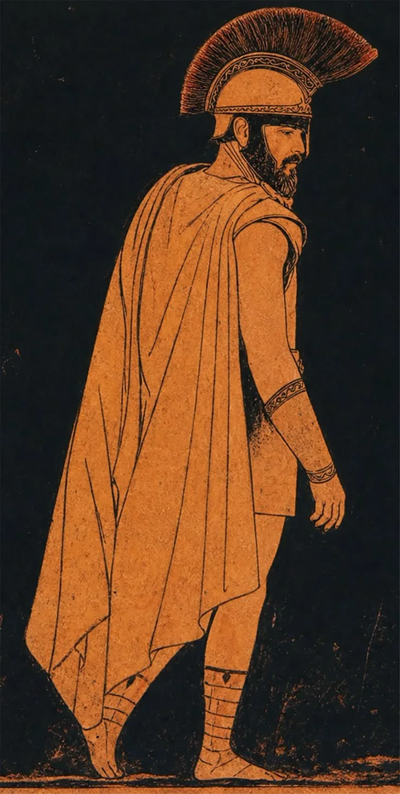
11 — Ogygia
12 — Home
Athena gives him the face of a beggar. Only one creature knows him: an old dog on a dung heap, who lifts his head, wags once, and dies.
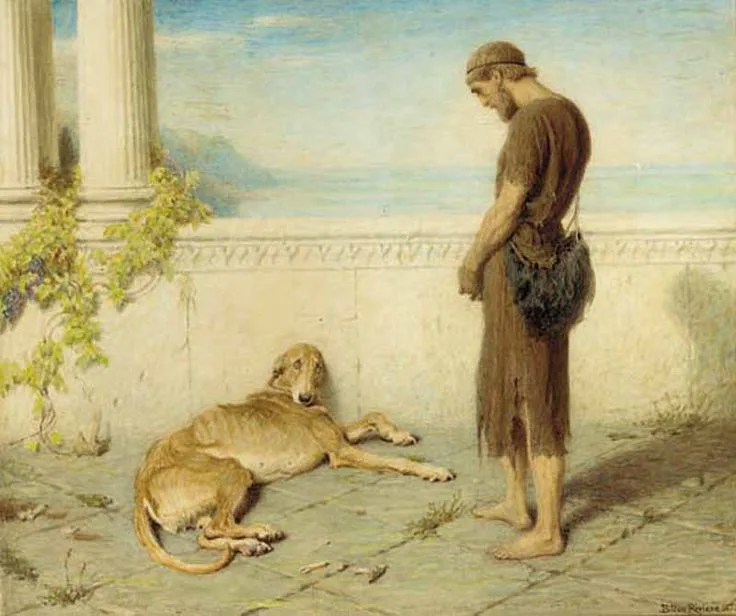
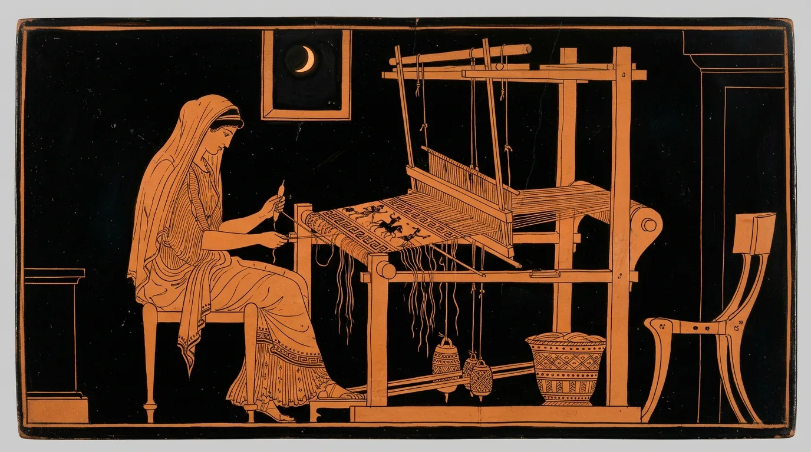
"When the shroud is finished, I will choose a husband." By day she weaves. By night she unpicks it. For three years. scroll to weave · scroll back to unravel
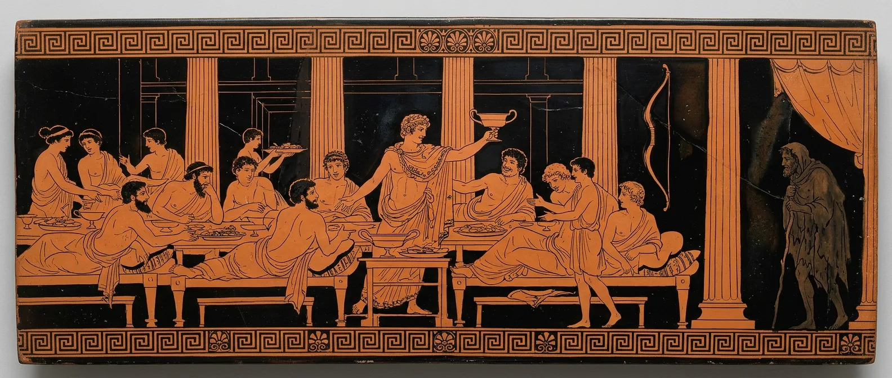
One hundred and eight suitors. One beggar by the door. Count them.
13 — The contest
You already strung this bow, at the very beginning. Now watch the arrow you set free. Twelve axe-heads. One line of flight.
14 — The last test
"Move our bed outside for him," she tells the maid. Only the man who built it knows why that is impossible. try to move the bed
"I built it around a living olive tree. One post is the trunk, still rooted in the earth. No one can move it."
She knew him then.
Twenty years. Six hundred men. One way home.
The Odyssey · written and directed by Christopher Nolan · after Homer
Music · Ludwig Göransson, "Odysseus"
Paintings · Tiepolo · Böcklin · Waterhouse · Draper · Rivière · and the anonymous potters of Athens
a fan-made scroll epic